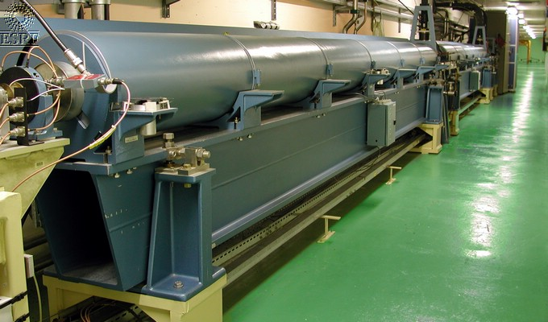

Linac
Device Description
Linac Class
Revision: Release_1_1 - Author: bourtemb - CVS repository: ESRF
This class manages the high level object controlling the linac
(ELIN/MASTER/OP).

This object allows the executions of sequences to put the
linac in ON,OFF,
STANDBY or LOW HEATING STATE.
It allows to load linac configuration files too.
For more information about the Linac configuration files, please have a
look at the LinacSequencer
Device Server User's Guide Device Description.
For more information about the Linac Sequences used to change the state of the Linac, please have a look at the Linac Sequences Definition.
The Linac server creates a thread which looks at the state of the
main
linac devices and then calculate the global state of the Linac.
This server is also in charge of the Beam Stop:
When the linac is in ON, UNKNOWN or ALARM state, the SR current is polled at 300ms, otherwise it is polled to 10 s.
If the Linac is ON and the CT_Current is above the SRCT_limit (Beam stop), the Linac Standby Macro will be executed.
There are 2 CT devices to read the SR current, a PCT device and an ICT device.
The server saves 2 different values for the beam stop, one which will
be used when the PCT device is selected and one when the ICT device is
selected.
When the CT device attribute is changed, the value of the beam stop will changed accordingly.
ESRF - Software Engineering Group